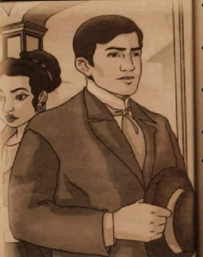

☰ open
KABANATA 1
Ang Pagtitipon

Naghanda ng isang magarbong salusalo si Don Santiago de los Santos o mas kilala bilang Kapitan Tiago. Dahil mabuting tao at kilala sa buong Maynila, agad na kumalat ang balita tungkol
sa pagtitipong gagawin sa Kalye Anluwagi. Nang gabi ng pagititpon, dumagsa ang mga bisita na iniistima naman ni Tiya Isabel, pinsan ni Tiago. Kabilang sa mga dumalo ay sina Padre Sibyla,
Tinyente Guevarra, mag-asawang Dr. de Espada�a at Donya Victorina, Padre Damaso, at isang kararating lamang na dayuhan sa Pilipinas. Matanong ang dayuhan tungkol sa mga Pilipino, kabilang
ang mga Indio. Nang mabanggit ang monopolyo sa tabako, dito nagsalita nang di maganda si Padre Damaso tungkol sa mga Indio. Hinamak niya ang mga ito at iniba naman ni Padre Sabyla ang
usapan. Napag-usapan ang pagkakaalis ni Padre Damaso bilang kura-paroko ng San Diego. Sabi ni Damaso, hindi raw dapat nangingialam ang hari ng Espanya sa pagbibigay-parusa sa mga erehe.
Sinabi naman ni Tinyente na nararapat lamang ang parusa. Inilahad ni Tinyente ang tunay na dahilan na pagkakalipat niya sa iba pang parokya. Ito raw ay dahil ipinahukay niya ang bangkay
ng isang marangal na lalaking napagbintangang isang erehe dahil ayaw lamang mangumpisal. Nagalit naman si Padre Damaso dahil sa sinabi ng Tinyente. Lumapit si Padre Sybila upang
pakalmahin ang kapuwa prayle. Naaalala rin kasi ni Damaso ang nawawalang mahahalagang dokumento. Kumalma ang magkabilang panig at umalis na sa umpukan si Tinyente. Nagpatuloy naman ang
talakayan at kuwentuhan ng mga bisita noong gabi.
« Back
Next »